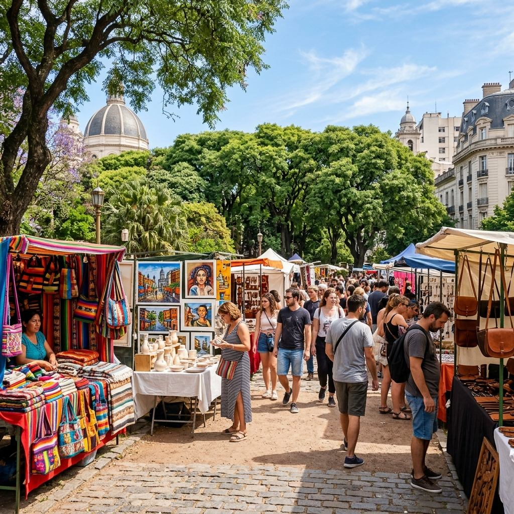
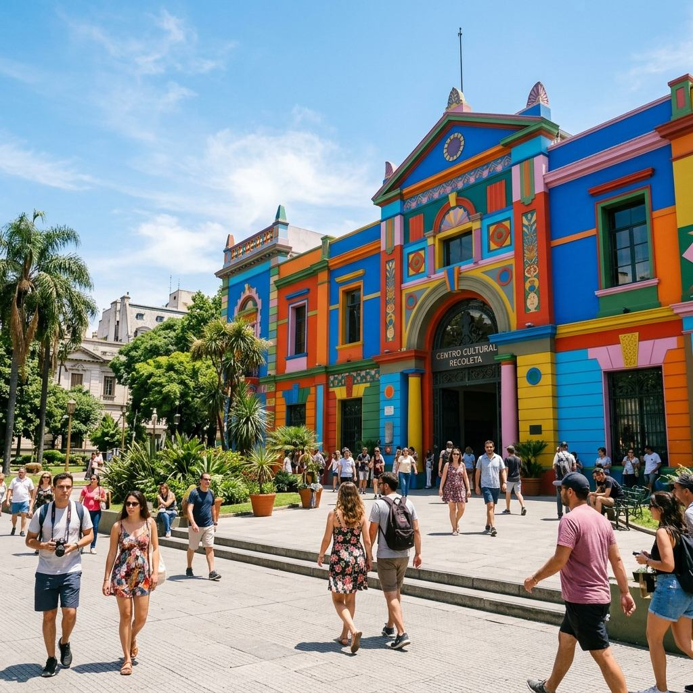
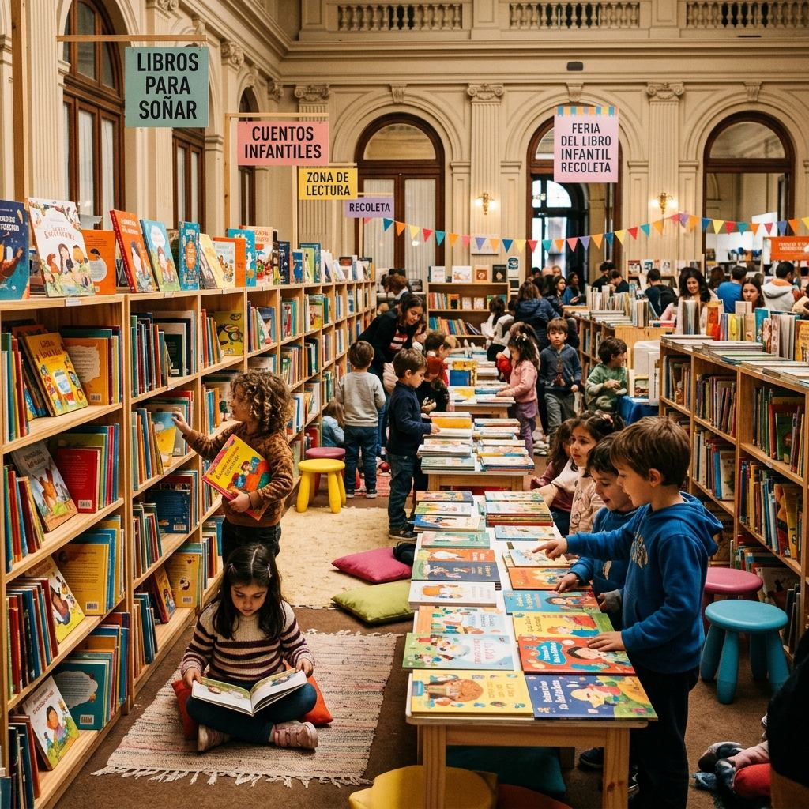

Elegí una nota de la lista para comenzar a leer.
Un portal para vecinos, visitantes y comercios de la Comuna 2: actualidad, patrimonio, cultura, trámites y recorridos del barrio.
Encontrá guías para trámites de la Comuna 2, ubicaciones de salud, puntos verdes de reciclaje y denuncias vecinales.
Explorá los recorridos autoguiados recomendados por Plaza Francia, museos históricos, palacios franceses y mapas turísticos.
Publicá tu agenda de eventos, postulá tu local en el mapa interactivo de la comuna o sumate como colaborador del portal.
Elegí una nota de la lista para comenzar a leer.
Más de 300 artesanos calificados exhiben piezas únicas en cuero, metal, madera y platería. Un paseo icónico frente al cementerio con espectáculos a la gorra.
Muestras de arte visual contemporáneo en salas históricas, recitales acústicos en los patios centrales y programación especial de teatro y danza para el invierno.
Recorrido libre por el patrimonio pictórico más importante del continente, con obras maestras de pintores locales e internacionales en exhibición libre.

Especial para visitas cortas. Ingresá al Cementerio de la Recoleta para ver las bóvedas monumentales, visitá la Basílica del Pilar y finalizá con un café histórico en La Biela.

Paseá bajo las sombras gigantes del Gomero Histórico de Plaza Francia, visitá las muestras en el Centro Cultural Recoleta y cruzá a contemplar el Museo de Bellas Artes.

Ideal para familias. Paseo al aire libre por los jardines de Plaza Alvear, diversión en la Feria del Libro Infantil (cuando está activa) y helados en Persicco.
Dirección: Pres. José E. Uriburu 1022
Horario: Lunes a viernes de 8:00 a 15:00 hs.
Servicios: Licencias de conducir, DNI y Pasaporte, Registro Civil, Rentas (AGIP), Mediación Comunitaria y Defensoría del Consumidor.
Dirección: Vicente López 2050 (3° Piso)
Horario: Lunes a viernes de 8:30 a 15:00 hs.
Servicios: Gestiones de Arbolado Urbano, Espacios Verdes, Inspección de Obras, Higiene Urbana y Consultas de Catastro Comunal.
Emergencias Médicas (SAME): Llamar al 107
CeSAC N° 22 (Salud Comunal): Uriburu 1018
Hospital General de Agudos Fernández: Cerviño 3356
Reclamos y Baches (147): Llamar al 147 o por WhatsApp al Boti (+54 9 11 5050-0147).
El barrio debe su nombre a los padres recoletos de la Orden de los Franciscanos Descalzos, quienes a comienzos del siglo XVIII se establecieron en la zona fundando un convento y la iglesia de Nuestra Señora del Pilar, la cual aún hoy se yergue esplendorosa.
Con la epidemia de fiebre amarilla de 1871, las familias más acaudaladas migraron desde el sur de la ciudad hacia el norte, eligiendo Recoleta por su altura y salubridad. Construyeron magníficos palacios de inspiración francesa, muchos de ellos hoy embajadas, hoteles de gran lujo o monumentos históricos.
Explorar Galería CompletaComuna 2: Puntos destacados de Universidades, Embajadas, Cultura y Gastronomía. Fuente: Sede Comunal 2 & GCBA. Actualizado en Julio 2026.
Este espacio digital es construido por y para los vecinos. Si presenciaste un evento, tenés fotos históricas guardadas o querés dar a conocer un comercio local, compartilo con la comunidad.
Envianos tu novedad directamente por WhatsApp para una revisión inmediata de nuestra redacción.